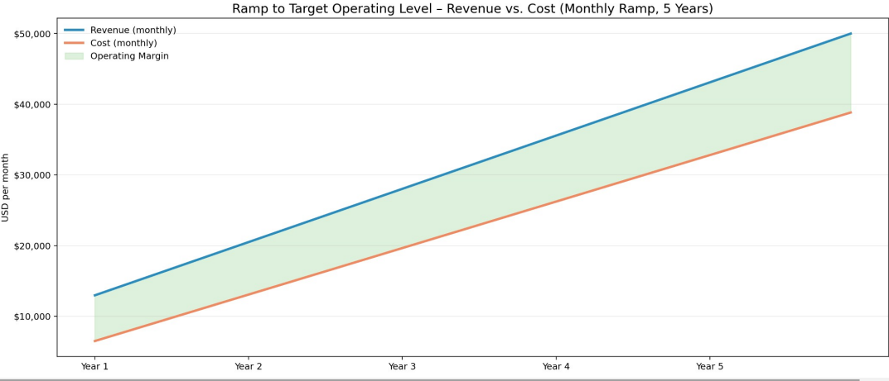
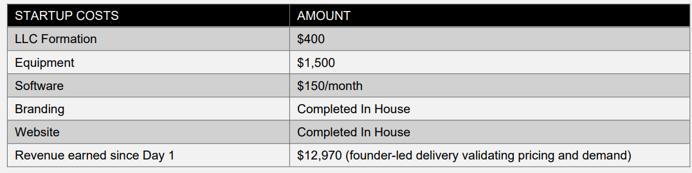

Discrete Development LLC
Business Plan v2 Financial
5-year Business Plan
Version: Financial
Date: January 2026
Executive Summary
Discrete Development LLC designs and implements systems that stay aligned with how work gets done. We serve small and medium-sized businesses that need clarity, adaptability, and long-term stability in their operational tools. Our approach emphasizes observation before action, intentional simplicity, and solutions that evolve naturally with the organizations they support. By combining the Microsoft ecosystem with custom development, we deliver systems that reduce drift, improve workflow reliability, and support sustainable growth.
Highlights
Operating Costs at Target Operating Level
As the business matures into a stable delivery rhythm, Discrete Development anticipates the following monthly operating costs. These reflect the addition of salaried positions for a Project Manager and DevOps Lead by Year 5, roles that are currently contracted, along with dynamic developer capacity as needed.
Projected Monthly Operating Costs
- Software and tools: $500
- Insurance: approximately $3,333
- Payroll: $25,000
- Marketing: $3,000
- Travel: $2,000
- Miscellaneous: $5,000
Total estimated monthly operating cost: approximately $38,833
Payroll reaches this level only at full target operating maturity (Year 5), reflecting two salaried leadership roles and partial developer capacity; Years 1–3 rely primarily on contract labor.
This cost structure supports a small, high-skill technical team capable of delivering ERP-level architecture and ongoing client support.

Revenue Model
Discrete Development operates on a hybrid consulting and product development model, generating revenue through project delivery, ongoing support, and long-term architectural evolution.
Project revenue
Average project value: $25,000 to $50,000
Expected project volume: Two projects per month
Workload target: Two active projects at any given time
Recurring revenue
Priority Support is offered at ten percent of the original project cost. This includes immediate phone support when available and next day onsite support when appropriate.
Assuming twenty-five percent of project clients convert after the first year, reflecting systems that require periodic adjustment and clients who value continuity, recurring revenue is projected at approximately two thousand dollars per month.
Target Operating Level
The Target Operating Level represents a stable, predictable operating state in which the company maintains consistent revenue, controlled workload, and strong margins while advancing the long-term product roadmap.
Target Operating Level Metrics
Monthly revenue: $50,000
Client volume: two new clients per month
Active workload: two concurrent projects
Margin target: thirty to forty percent operating margin
Margins trend toward the upper end of the range during periods of high utilization and toward the lower end during
capacity-building or transitional periods. Objectives
Discrete Development’s growth trajectory is based on architectural maturity, operational stability, and the evolution of “The Software” into a standalone ERP-class product. This trajectory is intentionally milestone-driven rather than date-driven, allowing validation and revenue to dictate pace. Growth is measured not in headcounts or locations, but in integrated capability, leverage, and product evolution.
Year 1 — Stabilization and Validation
- Deliver Power Apps–based version to 1–3 clients
- Validate workflows, ledger behavior, and forecasting logic
- Establish predictable monthly revenue
- Build foundational templates and reusable components
Year 2 — Team Expansion and Efficiency
- Hire a Project Manager and DevOps Lead
- Maintain dynamic developer capacity
- Expand near-term product capabilities
- Increase delivery efficiency and margin
Year 3 — Begin Extraction from Power Apps
- Extract core logic into standalone modules
- Build first React-based subsystems
- Strengthen performance, UX, and architectural clarity
- Position the product as an ERP-lite platform
Year 4 — Assemble the Unified Prototype
- Integrate React subsystems into a cohesive interface
- Implement authentication, roles, and admin tools
- Prepare a pilot ready version for select clients
- Reduce reliance on Power Apps to only transitional components
Year 5 — Deliver the ERP Prototype
- Complete a working ERP prototype built on the clarity-first architecture
- Demonstrate full ticket lifecycle, inventory intelligence, forecasting, and pricing
- Prepare for limited pilot deployments
- Evaluate strategic options for scaling, partnerships, or continued bootstrapping
Margin Strategy
Discrete Development targets a thirty to forty percent operating margin. This is achieved through high value project engagements, low-fixed overhead, architectural leverage, efficient delivery workflows, and selective hiring of high-impact roles. This margin level supports sustainable growth, ongoing product development, and long-term financial stability.
Mission, Vision, Purpose
Founding principle
Discrete Development exists to build systems—and a business—that operate in balance. Work should support people, not diminish them.
Mission
To design systems that remain aligned with real-world work, supporting clarity, adaptability, and long-term usefulness.
Vision
A future where business systems evolve naturally with the organizations they support, eliminating drift and restoring clarity to everyday work.
Purpose
Systems must reflect how work is performed. We design solutions that evolve naturally as work evolves, grounded in purpose and informed by history.
Core Values and Philosophy
Philosophy statement
We design systems that respect how work is done, and the people who do it. Our approach begins with understanding before action, ensuring solutions are robust, humane, and aligned. We refuse to impose templates that distort reality; instead, we build precisely what is needed, so clients are never handicapped by software.
Clarity
We maintain clarity of purpose by holding a clear mental image of the desired outcome and continuously evaluating whether our efforts move us closer to it. Complexity is tempting but often misleading; when work becomes overly complex, we pause, reassess, and realign.
Integrity
Integrity is alignment. What we say, document, and deliver remains consistent across environments and circumstances. Strong foundations endure, and every interaction contributes to that foundation.
Simplicity
We pursue simplicity not as an aesthetic, but as a practical discipline. Simple systems are easier to understand, maintain, and evolve. We strip away unnecessary layers until only what is essential remains.
Continuous growth
We learn continuously—individually and within the systems we build. Each iteration reveals new insight. We adopt new methods when they serve the purpose, guided by curiosity and disciplined experimentation.
Empathy
We listen first. Trust is built through patience, understanding, and shared perspective.
Respect
We welcome diverse viewpoints and consider alternate perspectives to ensure systems are designed thoughtfully and serve all users effectively.
Discrete Development, LLC Business Plan PAGE 7 OF 11
Guiding Principles
Purpose Above All
Every solution begins with real needs. Systems are vessels that sustain and expand those solutions. When a system proves reliable, it naturally grows to replace failing systems around it.
Respect for Original Intent
We begin by understanding the original intent of a system before extending it. Expansion is approached thoughtfully, balancing new requirements with existing design boundaries.
Our Nature, Not a Goal
Our values are not aspirations—they define how we operate today.
Client-Centered Understanding
We begin each engagement without assumptions or constraints, ensuring solutions reflect real needs rather than imposed structures.
Services and Value Proposition
What Makes Us Different
Our difference lies not only in what we build, but in how and why we build it. We do not simply deliver software; we deliver understanding, respect, and partnership. Our systems evolve alongside our clients, supporting their unique journeys and empowering their people. This approach forms the foundation of long-term trust.
How We Select the Right Solution Elements
Adopting a templated technology also means inheriting its limitations. While platforms can provide value when they align closely with a client’s goals, we never assume suitability. We evaluate whether a platform supports efficient execution and reliably enables the client’s vision. The goal is always dependable outcomes; everything else is negotiable.
Core Offerings
Microsoft Ecosystem
We modernize and organize business processes using SharePoint, Dataverse, Power Apps, and Power Automate to create custom management tools tailored to real workflows.
Workflow Architecture
We design lean workflows that meet operational requirements and support audit readiness where needed.
React / JSX Development
When platform constraints conflict with methodology, we build custom systems using modern architecture. These systems are designed for adaptability from the outset and remain aligned over time through periodic drift assessments. Our solutions feel like an extension of the client’s workspace because they are built around how work is done.
Go-to-Market Strategy
We grow through reputation, referrals, and targeted visibility within professional networks. Our outreach emphasizes clarity of purpose, respect for client intent, and demonstration of real outcomes. Engagements begin with observation-first discovery, ensuring alignment before commitment. We maintain a disciplined pipeline: one primary active client, one qualified opportunity “on deck,” and selective intake to preserve quality and focus.
Market & Positioning
Who We Serve
We primarily serve small to medium sized businesses across diverse industries that seek tailored, scalable technology solutions. Our clients value personalized service, flexibility, and systems that grow with their evolving operational needs. These organizations often face challenges with off-the-shelf software that fails to accommodate their unique workflows or business models.
What Problems We Solve
We address critical pain points such as inefficient workflows, lack of system adaptability, poor user adoption due to rigid templates, and difficulties in maintaining alignment between business processes and technology solutions. Our approach eliminates common frustrations by delivering custom-built systems that reflect real-world operations and evolve alongside our clients.
Why Our Approach Fits Small/Medium Businesses
Small and medium enterprises require solutions that are both cost-effective and highly adaptable. Unlike large-scale enterprise software that can be overly complex and rigid, our methodology emphasizes agility, customization, and close client collaboration. This ensures rapid deployment, minimal disruption, and ongoing alignment with business goals, making us an ideal partner for growing businesses.
We Sit in the Ecosystem
We position ourselves as trusted technology partners who bridge the gap between generic software providers and bespoke development firms. Leveraging the Microsoft ecosystem alongside modern development frameworks, we offer a hybrid approach that combines the reliability of established platforms with the flexibility of custom code. This unique positioning allows us to deliver solutions that are both robust and tailored, meeting the nuanced demands of our clients.
Operating Model
Our operating model prioritizes quality, alignment, and long-term stability. We grow deliberately, often focusing on one client at a time to ensure consistent attention, accountability, and fidelity to original intent.
Client Engagement
Each engagement begins with a value proposition that outlines alignment between client needs, methodology, and outcomes. This establishes a shared understanding before any technical work begins.
Technical Support Structure
Discrete Development maintains a modular support model that includes a remote technical specialist (contract basis) for overflow development, troubleshooting, and rapid prototyping. This structure keeps fixed costs low while enabling flexible capacity during early growth. As the business scales, this role transitions into a formalized contractor pool or an in-house technical hire.Internal Tools
Internal operations run on Microsoft 365 Business tools, with QuickBooks Online supporting finance and accounting. These platforms provide reliability, clarity, and predictable workflows.
Project Execution
Projects are delivered using either Microsoft platforms or custom codebases built with React, Node.js, JSX, and Express, depending on requirements and long-term maintainability.
Project Lifecycle
Intake → Assessment → Build → Deliver → Support
Design Review & Feedback
Documented designs are reviewed and approved before development begins. Continuous feedback ensures alignment throughout the project lifecycle and prevents drift.
Project Management
PMI principles guide planning, while Agile practices support execution, adaptability, and iterative refinement.
Growth Plan
Growth Philosophy
Discrete Development prioritizes measured, sustainable growth over rapid expansion. The focus is on depth of engagement, quality of delivery, and reputation earned through execution rather than volume.
Near-term Growth Strategy
Visibility & Positioning
Establish a clear and consistent presence that communicates who we are, what we do, and how we work. Growth begins with being discoverable and understandable to the right audience.
Focused Client Engagement
Maintain primary focus on one active client engagement at a time, ensuring full attention, quality, and outcome ownership.
Pipeline Continuity
While actively engaged, maintain one additional qualified client opportunity “on deck” to ensure continuity without over-extension.
Growth Controls
Intentional Intake
New work is accepted selectively to preserve delivery quality and alignment with Discrete Development’s methodology.
Reputation Led Expansion
Growth is driven through referrals, demonstrated outcomes, and repeat engagements rather than aggressive sales or broad outreach.
Long-Term Outlook
As demand increases, Discrete Development expands capacity through its dynamic project team model, adding capability as required while maintaining consistency through standardized delivery frameworks and documentation first practices.
Risk Map
Client Misalignment
Risk:Client expectations don’t match actual workflow realities or project scope.
Mitigation:Observation first discovery, documented assumptions, continuous feedback, and early validation prior to build commitment.
Scope Creep
Risk:Evolving processes introduce unplanned complexity.
Mitigation:Modular system design, clearly defined delivery phases, and change controlled iteration points aligned with operational reality.
Over-Customization
Risk:Highly tailored solutions become fragile or difficult to maintain over time.
Mitigation: Reuse of proven methods, intentional simplicity, and documentation of intended growth paths.Client Dependency
Risk: Clients become reliant on Discrete Development for routine adjustments or ongoing changes. Mitigation: Transparent architecture, clear documentation, and structured knowledge transfer that enables client independence.Market Education Gap
Risk: Prospective clients may not immediately recognize the value of “less, but better” system design. Mitigation: Clear positioning, practical examples, and demonstrated outcomes.Delivery Continuity & Resource Flexibility
Risk: Fluctuating project demand requires scalable expertise without compromising quality. Mitigation: A dynamic project team model supported by standardized delivery frameworks and documentation first practices.Founder Bandwidth
Risk: Early-stage delivery relies heavily on founder's availability. Mitigation:Controlled intake, modular delivery, documentation-first practices, and phased delegation of operational roles.
Financial Assumptions
Discrete Development operates with a lean cost structure designed to remain flexible, predictable, and aligned with actual demand. The following assumptions underpin the financial model and reflect deliberate constraints rather than maximum growth scenarios.
Operating Costs
Overhead is intentionally limited and primarily consists of essential business tools and services, including productivity and collaboration software licenses, paid training for recurring project collaborators, and targeted marketing efforts. Marketing spend is planned conservatively, with an initial target budget of approximately three thousand dollars per month, adjusted based on demand and effectiveness. Operating costs are expected to reach the target level of approximately $38,800 per month as the team structure matures beginning in Year 5.

Appendix
